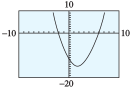
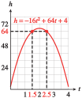

In this chapter, we shall define a quadratic function and what information each way of writing such a function presents to the reader. It should be noted that the shape of the graph of a quadratic function is called a parabola.
Quadratic Function
A quadratic function is one that can be written in the form
\begin{equation*}
f(x)=ax^2+bx+c
\end{equation*}
where \(a,b,\) and \(c\) are constants with \(a\neq 0\text{.}\)
When a quadratic function is written in this form, we say that the quadratic function is written in standard form.
In the definition above, notice that if \(a\) is zero, there is no \(x\)-squared term, so the function is not quadratic (it would then be linear).
Suppose that the height of a baseball \(t\) seconds after being hit is given by
\begin{equation*}
h = -16t^2 + 64t + 4.
\end{equation*}
How can we find two times when the baseball is \(64\) feet high?
We are looking for values of \(t\) that produce \(h = 64\) in the height equation. So, if we substitute \(h = 64\) into the height equation, we need to solve the quadratic equation
This equation cannot be solved by extraction of roots, because there are two terms containing the variable \(t\text{,}\) and they cannot be combined. To solve this equation, we will appeal to a property of our number system, called the zero-factor principle.
SubsectionZero-Factor Principle
Can you multiply two numbers together and obtain a product of zero? Only if one of the two numbers happens to be zero. This property of numbers is called the zero-factor principle.
Zero-Factor Principle
The product of two factors equals zero if and only if one or both of the factors equals zero. In symbols,
\begin{equation*}
ab=0\ \ \text{if and only if}\ \ a=0\ \ or\ \ b=0.
\end{equation*}
The principle is true even if the numbers \(a\) and \(b\) are represented by algebraic expressions, such as \(x - 5\) or \(2x + 1\text{.}\) For example, if
But this is the equation we solved in part (a), because \((x - 6)(x + 2) = x^2 - 4x - 12\text{.}\) The solutions of that equation were \(6\) and \(-2\text{,}\) so the \(x\)-intercepts of the graph are \((6,0)\) and \((-2,0)\text{.}\) You can see this by using a graphing utility, as shown in Figure278.
Figure278
SubsectionSolving Quadratic Equations by Factoring
Before we apply the zero-factor principle to solve a quadratic equation, we must first write the equation so that one side of the equation is zero. Let us introduce some terminology.
Forms for Quadratic Equations
A quadratic equation written
\begin{equation*}
ax^2 + bx + c = 0
\end{equation*}
First, we write the equation in standard form. \begin{align*} 3x(x + 1) \amp = 2x + 2\amp\amp\text{Apply the distributive law to the left side.}\\ 3x^2 + 3x \amp = 2x + 2\amp\amp\text{Subtract }2x + 2 \text{ from both sides.}\\ 3x^2 + x - 2 \amp = 0 \end{align*} Next, we factor the left side to obtain
it is incorrect to set each factor equal to \(15\text{!}\) (There are many ways that the product of two numbers can equal \(15\text{;}\) it is not necessary that one of the numbers be \(15\text{.}\)) We must first simplify the left side and write the equation in standard form. (The correct solutions are \(7\) and \(-1\text{;}\) make sure you can find these solutions.)
We summarize the factoring method for solving quadratic equations as follows.
To Solve a Quadratic Equation by Factoring
Write the equation in standard form.
Factor the left side of the equation.
Apply the zero-factor principle; Set each factor equal to zero.
Solve each equation. There are two solutions (which may be equal).
We substitute \(64\) for \(h\) in the formula, and solve for \(t\text{.}\) \begin{align*} 64 = -16t^2 + 64t \amp + 4\amp\amp\text{Write the equation in standard form.}\\ 16t^2 - 64t + 60 \amp= 0\amp\amp\text{Factor 4 from the left side.}\\ 4(4t^2 - 16t + 15) \amp= 0\amp\amp\text{Factor the quadratic expression.}\\ 4(2t - 3)(2t - 5) \amp= 0\amp\amp\text{Set each variable factor equal to zero.}\\ 2t - 3 =0 ~~\text{ or }~~ 2t - 5 \amp= 0\amp\amp\text{Solve each equation.}\\ t = \frac{3}{2} ~~\text{ or }~~ t \amp = \frac{5}{2} \end{align*} There are two solutions to the quadratic equation. At \(t = \dfrac{3}{2}\) seconds, the ball reaches a height of \(64\) feet on the way up, and at \(t = \dfrac{5}{2}\) seconds, the ball is \(64\) feet high on its way down. (See Figure283.)
Figure283
Note284
In the solution to the above exercise, the factor \(4\) does not affect the solutions of the equation at all. You can understand why this is true by looking at some graphs. First, check that the two equations
in the window \begin{align} \text{Xmin} \amp = -2 \amp\amp \text{Xmax} = 8\\ \text{Ymin} \amp = -5 \amp\amp \text{Ymax} = 10. \end{align} Notice that when \(y = 0\text{,}\) \(x = 3\) or \(x = 1\text{.}\) These two points are the \(x\)-intercepts of the graph. In the same window, now graph
(See Figure285.) This graph has the same \(x\)-values when \(y = 0\text{.}\) The factor of \(4\) stretches the graph vertically but does not change the location of the \(x\)-intercepts. The value of the constant factor \(a\) in the factored form of a quadratic function, \(f(x) = a(x - r_1)(x - r_2)\text{,}\) does not affect the location of the \(x\)-intercepts, because it does not affect the solutions of the equation \(a(x - r_1)(x - r_2) = 0\text{.}\)
Graph \(y = f(t)\) and \(y = g(t)\) together in the window \begin{align} \text{Xmin} \amp = -2 \amp\amp \text{Xmax} = 6\\ \text{Ymin} \amp = -20 \amp\amp \text{Ymax} = 25 \end{align} and locate the horizontal intercepts of each graph.